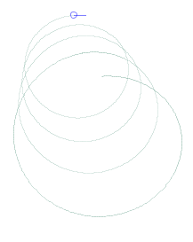

-Xmx512m, where 512
can be any number of megabytes. 512 megabytes should be enough to run any of the example
files without problems, though if you don't have 512 MB of memory then
you probably shouldn't let Java allocate that much. So, for example, you
might run Cheloniidae this way:
java -Xmx512m blockcityIf your classpath is not configured correctly (i.e. does not include the current directory), you may need to run this:
java -Xmx512m -cp ./ blockcityDocumentation is maintained in AsciiDoc format (the
cheloniidae.html file in the download), and the README
file should contain instructions for rebuilding Cheloniidae. (This may be necessary depending
on your version of the JRE). Future major releases will include
documentation in TeX format.
If you like Cheloniidae, think it should be changed, have a cool image that you
made with it, etc., send me an e-mail at
spencer@spencertipping.com.
import cheloniidae.*;
public class Square {
public static void main (String[] args) {
TurtleDrawingWindow w = new TurtleDrawingWindow ();
Turtle t = new Turtle ();
w.add (t);
w.setVisible (true);
for (int i = 0; i < 4; i++) {
t.move (100);
t.turn (90);
}
}
}

To break out of the plane, we use turnPhi. Depending on whether we're
using spherical or cylindrical coordinates, this will either bend the plane into
a cone away from the camera or rotate it about the Y axis, respectively.
import cheloniidae.*;
public class Phi {
public static void main (String[] args) {
TurtleDrawingWindow w = new TurtleDrawingWindow ();
Turtle t = new Turtle ();
w.add (t);
t.setPenSize (0.25);
t.setPenColor (new java.awt.Color (
0.2f, 0.5f, 0.4f, 0.5f));
/*
* Translucency is enabled on the colors (hence
* fourth channel above). Also, lines are depth-sorted
* in 3D view so that the overlap effects are correct
* for the view angle.
*/
t.turnPhi (10);
for (int i = 0; i < 1440; i++) {
t.move (1);
t.turn (1);
}
w.setVisible (true);
}
}
// w is a TurtleDrawingWindow AxialGrid g = new AxialGrid (AxialGrid.XY_PLANE | AxialGrid.XZ_PLANE); w.add (g);
import cheloniidae.*;
import java.awt.Color;
import java.util.Random;
public class tree {
public static final Color branches =
new Color (0.4f, 0.35f, 0.2f, 0.8f);
public static final Color leaves =
new Color (0.0f, 0.2f, 0.0f, 0.5f);
public static void main (
String[] args) {
TurtleDrawingWindow w =
new TurtleDrawingWindow ();
Turtle t = new Turtle ();
w.add (t);
/*
* This turn and jump rotate the tree
* so that it points upwards and move
* 100 units down, respectively, the
* end result being that it is better
* centered in the viewport.
*/
t.turn (-90);
t.jump (-100);
tree (t, 60, 16, new Random ());
w.setVisible (true);
}
public static void tree (
Turtle t, double distance,
int recursionLevel, Random r) {
t.setPenColor (branches);
t.setPenSize (distance * distance / 200.0);
t.move (distance * (0.3 + 0.7 * r.nextDouble ()));
t.turn (-15 * r.nextDouble () * 2.0);
t.turnPhi ((r.nextDouble () - 0.5) * 60.0);
if (recursionLevel > 0) {
t.pushTurtleState ();
/*
* Before rendering a sub-tree, we remember the turtle's location
* with a stack push. When we pop the turtle state, its location,
* theta heading, and phi heading will all be restored.
*/
tree (t, distance / 1.04 * (0.8 + 0.2 * r.nextDouble ()), recursionLevel - 1, r);
t.popTurtleState ();
t.turn (30 + r.nextDouble () * 4.0);
t.pushTurtleState ();
tree (t, distance / 1.04 * (0.8 + 0.2 * r.nextDouble ()), recursionLevel - 1, r);
t.popTurtleState ();
} else {
t.jump (distance * -0.3);
t.setPenSize (distance * distance / 300.0);
t.setPenColor (leaves);
t.turnPhi ((r.nextDouble () - 0.5) * 360.0);
for (int i = 0; i < 4; i++) {
t.pushTurtleState ();
t.turn (-45 + (r.nextDouble () - 0.5) * 15.0);
t.move (distance * 0.2 * (4 - i));
t.popTurtleState ();
t.pushTurtleState ();
t.turn (45 + (r.nextDouble () - 0.5) * 15.0);
t.move (distance * 0.2 * (4 - i));
t.popTurtleState ();
t.jump (distance * 0.3);
}
}
}
}